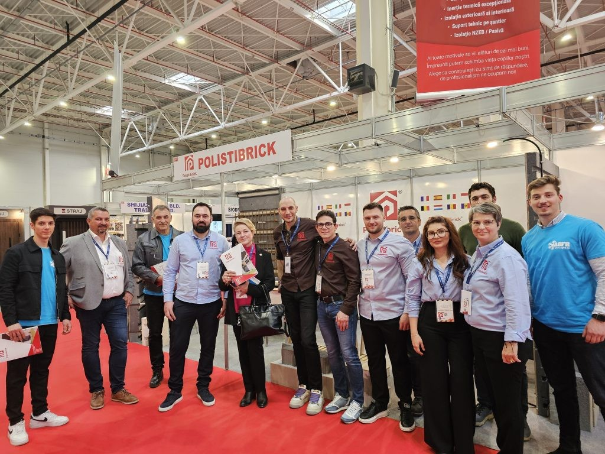
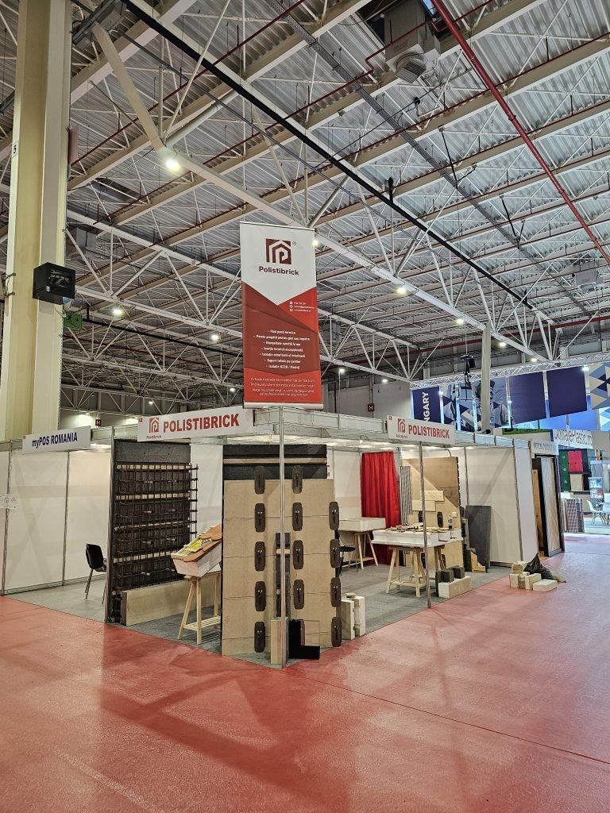

Presse · Publié le 21 juin 2025


En mars 2024, Polistibrick a fait ses débuts en tant qu’exposant au CONSTRUCT-AMBIENT EXPO, un événement de référence pour l’innovation et la technologie dans le secteur de la construction. C’était la première fois que nous présentions au public spécialisé le système Polistibrick – notre solution brevetée pour une construction écoénergétique et durable.
➡️ Le système a suscité l’intérêt des architectes, ingénieurs et promoteurs grâce à :
• La rapidité d’exécution offerte par les composants modulaires,
• La structure robuste en béton armé avec isolation intégrée,
• La capacité de construire des maisons passives avec des performances thermiques élevées.
Cette participation nous a ouvert la voie à des collaborations, validant notre orientation technologique et renforçant la position de Polistibrick comme acteur majeur de la construction intelligente.